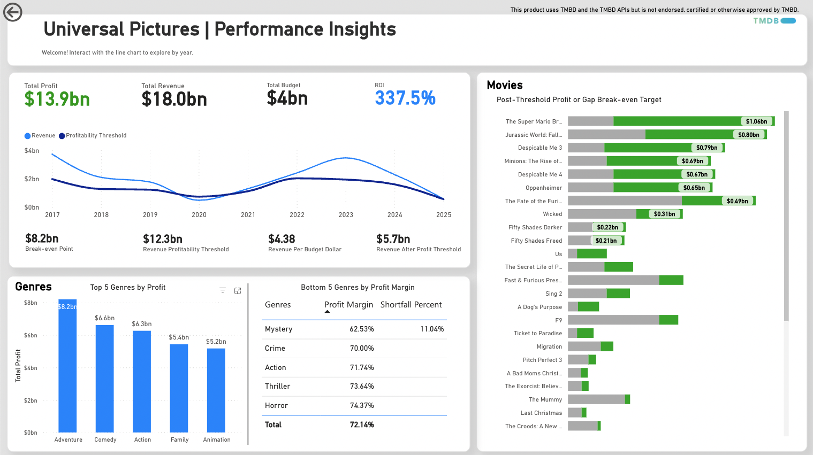

About Me
Hello! I'm Jimmy. I make data useful by combining deep technical skills with strong business acumen. I bridge the gap between data and decision-making to deliver solutions that drive real impact.
I enjoy understanding both technical and business processes and really dive deep into understanding the "why" and the "how", which helps me navigate ambiguity, collaborate more effectively, and better serve my stakeholders.
Completed Projects
Movie Performance & Profitability Dashboard
Interactive Power BI Dashboard that analyzes movie and studio performances
Description:
I love movies and I always look up movie revenues for films I enjoyed watching (I guess as way to validate if others enjoyed it as much as I did!) so I thought this was the perfect project to work on. I used Python to call a public API and saved the data to a JSONL file. After I analyzed the data and determined the data model and tables I needed, I processed and cleaned the data into csv files I used for Power BI. Then I researched and determined metrics and KPIs to build using DAX and came up with a layout that would give insight to movie revenues.
- Tools: Power BI, Python
- Skills: ETL with Python, Data Modeling, KPI designs, custom DAX measures, and visual storytelling
Drillthrough page to studio's performance
